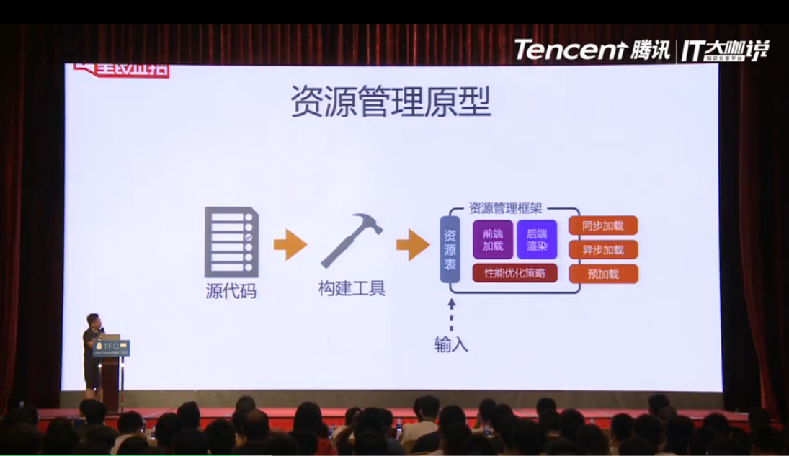
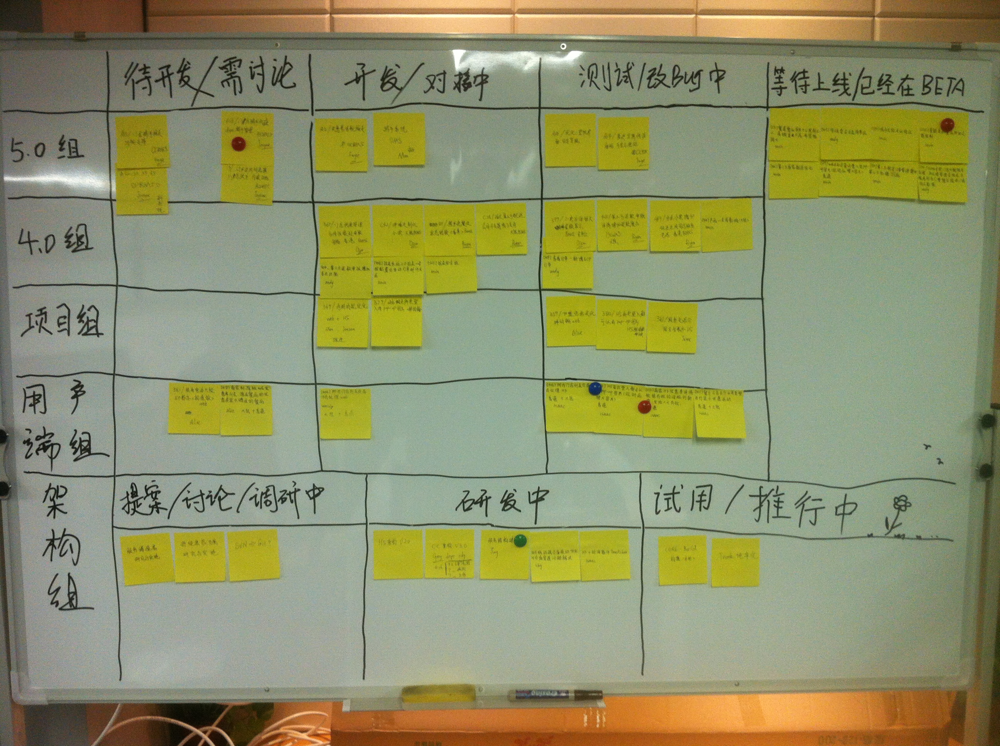

张在视频里主要谈了4个主题：
1、组件化开发与系统拆分（分而治之的思想）、 通过内嵌、依赖、定位来管理所有前端资源，通过资源加载框架读取资源表，实现资源加载程序化控制，  源代码-->构建工具-->资源表（前端加载、后端加载、性能优化策略、同步加载、异步加载、预加载）； 大型网站子系统拆分 在代码中实现多个子系统的拆分，通过资源表等方式拆分子系统
2、持续集成/交付/部署 尽全力打造可自动化部署的测试、预发布、灰度发布环境，实现持续集成，基于持续集成，进一步做到持 续交付、杜绝临上线前的返工张提到了Gitlab Continuous Integration 每个git分支集成自动测试、 结合Git-flow 前端工程多环境实现原理 内网泛域名解析->Linux（gitlab-runner）->nginx（反向代理） 具体步骤： 1、内网泛域名解析 2、gitlab-ci针对推送的git分支生成nginx配置文件 3、随机选择一个系统可用端口，分配给git分支对应的应用，启动nodejs server，监听此端口 4、nginx做反向代理，把域名代理给对应app端口，实现多环境效果 持续集成--pipeline 持续集成--eslint 持续集成--上线部署
3、前端自动化测试、 基于dom-diff的页面变更监控 Dom的4种差异：新增-删除-内容改变-样式改变 Dolphin自动化测试系统：log的diff
4、敏捷开发：看板，可视化你的进程 推荐实践了一定时间后看《看板实战》 “纸上得来终觉浅，绝知此事要躬行。” 这是我司参加TFC后看到看板开发的一个实践思路。  我觉得在这基础上还可以： 1、加上多种颜色的便笺满足不同类型的任务 2、便笺上写上需求号、姓名和deadline，加强仪式感
另外张云龙认为工程师的技术发展有4个发展阶段： 1、栈内技术 前端各种框架、各种技术 2、栈外技术 ：Linux、nginx、后端、算法、uiue等 3、工程经验 4、指导新人，一个人的力量也有限，带领多人去完成一个大任务
传送门：初创公司前端工程体系建设